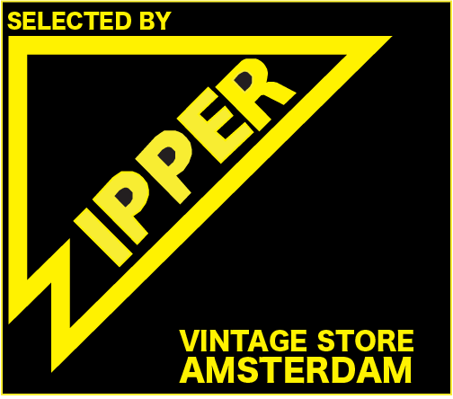
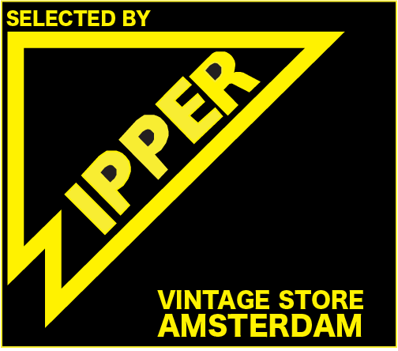

Sla je favorieten vitage kleding winkels binnen Amsterdam op. Hier onder zie je een kaart van Amsterdam met erin waar je al je favoriete winkels kunt vinden. Dit kun je doen door erop te klikken in de kaart en het op te slaan.
 


Druk op welke winkel je dan ook wilt opslaan en dan kun je het opslaan.